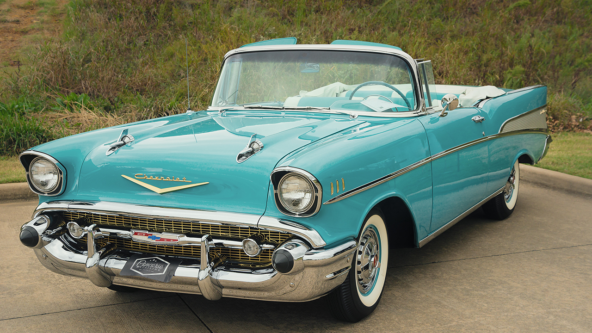

Bienvenido a Coches Clásicos
Explora la historia, los modelos y la galería de los coches más emblemáticos de todos los tiempos.
Sobre Nosotros
¡Bienvenidos a mi mundo motorizado! Soy Miguel, un entusiasta de los coches clásicos con una pasión desbordante por cada curva,cada motor rugiente y cada historia detrás de estos iconos sobre ruedas.
Únete a mí en este viaje lleno de nostalgia, emoción y un amor inquebrantable por los coches clásicos.
¡Prepárate para sentir la velocidad y la elegancia atemporales que solo un verdadero clásico puede ofrecer!